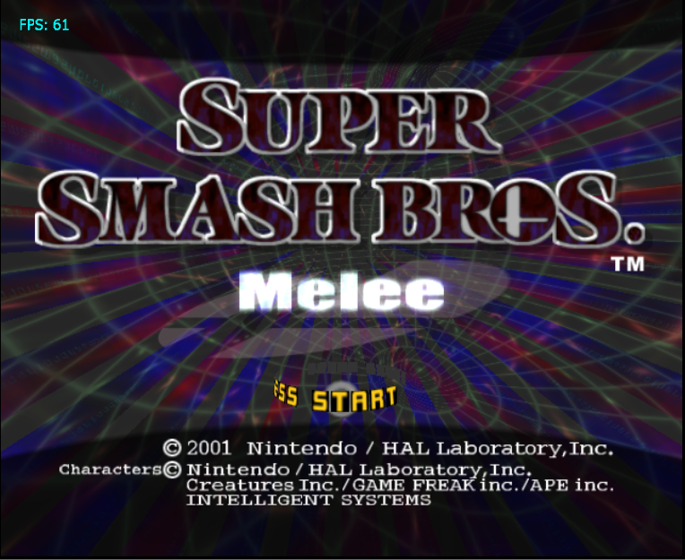
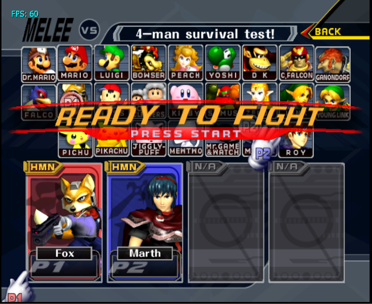
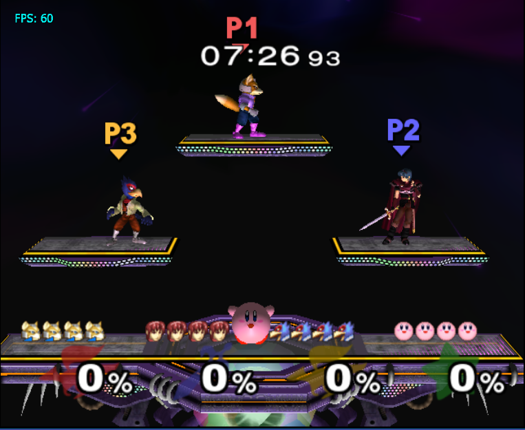
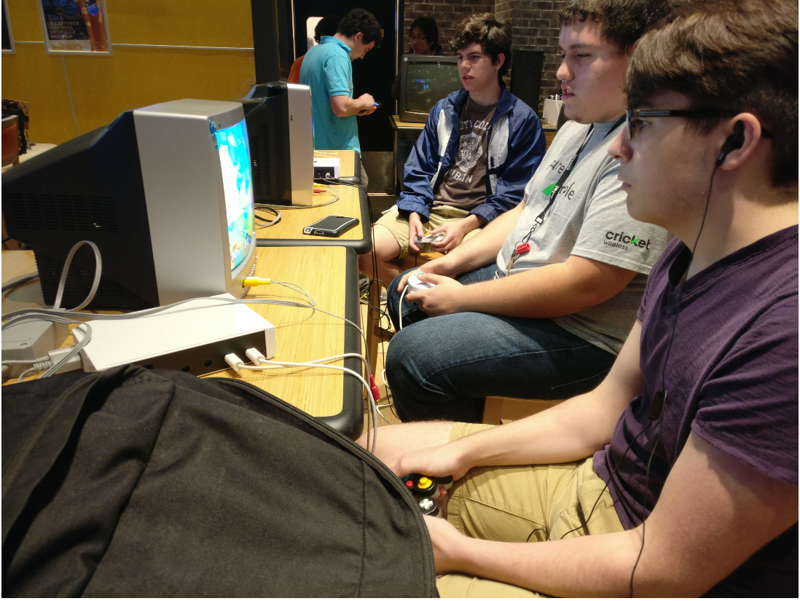

An Intro To Competitive Super Smash Bros. Melee
Never played Super Smash Bros. Melee before? This site will work as an introductory guide to give you a brief rundown of how the game is played at a competitive level, general terms you’ll hear through your journey in competitive Smash, and some info about some of the current best players in the game. Ready to dive in? Keep scrolling!
Wait! I've never heard of Super Smash Bros. Melee!
Super Smash Bros. Melee came out for the Nintendo GameCube in 2001. Featuring 26 unique character's, up to four players can choose from various stages and rulesets to duke it out in a fighting game experience featuring Nintendo characters across various titles, such as Mario, Link, Donkey Kong, Captain Falcon, and many more. The goal of the game is simple: knock your opponent off the stage more times than they knock you off the stage. Hitting your opponent(s) adds to their damage counter, in this case represented as a percentage. The higher the percentage, the farther the character goes, the more likely they are to fall off the stage. Do whatever it takes to knock your opponent off stage and win the game! That’s all there is to it!
People play this competitively? How?
Yupp! Melee has had a competitive scene to some degree since its creation. Melee has a very high skill ceiling, allowing players to utilize mechanics built into the game to play the game at a more skillful level than your average player. I’ll go over some of those mechanics soon. In more recent years the Melee competitive scene has seen an influx of new players, mainly due to the creation of the the Smash Bros. Documentary that was created in 2013. This Documentary goes over the history Melee as a competitive game, so if you want a more of a backstory look into how Melee got to where it is today, and have roughly four hours of free time on your hands, you can watch that here.
Ruleset
Melee at tournaments is typically played in a 1-v-1 or 2-v-2 setting, with a bracket format that has both a winners and losers side. Overall, the rules are roughly the same for both, so let's look at them from a 1-v-1 standpoint if you’re new.To start, players are given four ‘lives’ or stocks, as they’re called in game, all items are turned off, and the timer is set to 8 minutes. Players then select from a group of stages-Battlefield, Yoshi’s Story, Fountain of Dreams, Final Destination, Dream Land, or Pokemon Stadium- followed by which character they are going to play, and then the game begins. A player wins a game by causing their opponent to lose all their stocks or by ending the 8 minutes with the lower percent. This is done through various combos, edgeguards, and neutral engagements. Don’t worry if you don’t know what those are, I’ll go over them soon! Games are played in either a best-of-three or best-of-five format, and players who win their set of games continue on in the winners side of bracket, while the losers drop to the losers side of bracket to play others who have lost. If a player loses in losers side, they are out of the tournament! A player wins a tournament by being the last person in bracket, with every other player having lost in losers and therefore eliminated from bracket.
Tier list
As great as a game melee is, it isn't the most balanced game when you look at all the characters and how good they are in comparison to the other.Certain characters have better tools in their kit to counter others, and therefore fair better than others in a tournament setting. While these characters are better than others, this doesn’t mean they are easier to play, as they require a lot of technical inputs to be played at their highest level. The tiers are determined by top players in the competitive community, with characters like Fox and Falco having some of the highest technical ceilings and therefore being some of the theoretical best characters in the game, and characters like Kirby and Bowser being at the bottom due to not having the best moves to deal with the pace at which Melee is played. A full tier list can be found here here.
A quick guide of terms to get you started on understanding competitive Melee
Wavedashing

Wavedashing is done by jumping and immediately air dodging(pressing the left or right bumper while in the air) diagonally into the stage. This is typically faster and provides more options for players to perform moves in contrast to just dashing. Players typically use this as a way to get closer to their opponents for an attack or to escape their opponent as a defensive option.
Short hop

A short hop is done by quickly pressing the X or Y button. Aerials are some of the fastest moves in the game, and are a great way to either combo or knock an opponent off stage and short hops allow players to use these moves quickly and to their fullest ability.
DI

Known fully as direction influence, DI (pronounced dee-eye) allows players to affect their trajectory when they are hit by a move. This can be especially useful at high percents as it allows players to influence where they are sent by strong hitting moves and can allow them to live in cases where they usually would lose a stock.
Teching

A tech typically refers to the action of players pressing either the left or right bumper after being hit and before hitting a surface such as a wall or the ground. This allows players to act faster after hit or roll out of situations in which they may be hit again. A missed tech usually results in a hard punish by the opposing player, so make sure to get good at these!
Dash Dancing

The act of using a characters dash to move back and forth. This is typically used in instances of neutral, when neither player is hitting the other and they are looking for an opening to do so.
Chain Grab

Characters are able to repeatedly grab and rethrow other characters, resulting in an opportunity for lots of damage to be done. Each character in the game has a certain weight, which determines how fast they fall. Characters are usually defined by this weight, falling into categories such as “fast fallers” or “floaties”, with fast fallers being the more common of the two to suffer from being chain grabbed.
Crouch Cancel

The act of crouching and reducing the amount of knockback done to the character. Knockback is how far your character gets sent after being hit by a move. At low percents this can be used to prevent a character from going far after being hit, allowing for a retaliating hit to be done, and at high percents this can allow for players to tech on stage, preventing the loss of a stock.
Edge guard

One of the easiest ways to take an opponent's stock is to get them off the stage and keep them from getting back on. A typical was this is done is through edge guarding, which is any act that prevents said opponent from reaching the stage. In Melee only one character is capable of occupying the ledge at a time, so players will typically use the ledge as a means to get these edge guards.
Neutral

Neutral is an interaction that occurs when neither player is attacking each other, and instead are moving around the stage looking for the best opportunity to attack the other. This, combos, and edge guarding are typically considered the three states you can be in while playing Melee.
Combos

Combos in Melee refer to the act of hitting your opponent repeatedly, typically preventing them from reaching the ground and returning to neutral. Combos are a great way to rack up percent and even lead to edge guards, so mess around with characters you like and see what combos you can pull off!
Do people play this game?
They do! Tournaments can be found almost every day if you look hard enough, ranging from small groups of friends to tournaments at college campuses that get 40 entrants to super majors which garner upwards of 1300 entrants for bracket! Large tournaments typically last three days, starting on Friday and with grand finals on Sunday and can gather tens of thousands of viewers, with tournaments such as Evo, commonly compared to the Super Bowl in terms of prestige of winning the event, peaking at over 177,000 viewers this year on twitch.tv. Players play for a piece of the prize pool, which typically gives payouts to those who finish in the top 8 anywhere from a few hundred to several thousands of dollars. Smash Summit 5, an invitational where the best of the best gather to play, had a prize pool of over $83,000 dollars, with the winner taking home nearly $30,000, making it the highest prize pool in Melee history. Top players in the game have made playing Melee their career, with sponsors such as Cloud 9 (Mang0), TeamSoloMid(Leffen), Team Liquid (Hungrybox), and Alliance (Armada) paying players salaries to play for their team at events. Players of all characters and skill gather around the world to play Melee, and it continues to grow as more players pick up the game. Maybe you’ll be the next one to join this wonderful community!
So how do I play?
Grab a GameCube controller, a Melee disk, a GameCube or Wii, and you can start playing today! Ask a friend if they’d like to play or check out your local Facebook pages to see if you have a scene already established near you! Ask lots of questions and feel free to visit back here if you need any refreshers! Don’t forget to practice, as a lot of this tech takes many hours to get good with and utilize properly. Before you go, check out the videos below of some of my favorite Smash Bros. moments and check out what makes this game so loved 17 years after its release.
Bonus! Quick guide to picking a character!
There are a lot of characters in Melee, and it can be hard to pick up one from the get go, especially if you aren't sure who is good or bad yet. Click on some of the choices below to reveal which characters would be the best pick for you!
You would like either Fox, Falco, or Captain Falcon! With the right inputs, these are some of the fastest characters in the game, and they allow for the highest octane gameplay possible!
You would like either Marth, Sheik, or Ice Climbers. These characters look for small windows to strike their opponent and do high damage off of a combo string that can lead into a big punish.
You would like either Jigglypuff or Peach. The floatier characters in the game, you can use these characters to have high mobility in the air, both on and off stage. These characters are great at edge guarding, but be careful, their floaty nature makes them easy to k.o. off the top of the stage!
You would like either Luigi, Pikachu, or Samus. These characters have a unique playstyle with interesting mobility compared to other members of the cast. If you prefer to take a different route when it comes to competing in Melee, these are your characters!
End.
This is a project done for JOU3363, a course offered at University of Florida. This code uses jpiling, a javascript plugin which can be found here. All gifs and photos were taken by me, and showcase Super Smash Bros. Melee, a game developed by HAL Laboratory and published by Nintendo. I do not own any of the characters.The gifs were made using recorded footage from Melee and converted using EZGIF.Com. This page works best on a desktop computer.Thanks for viewing, and have fun in Smash!